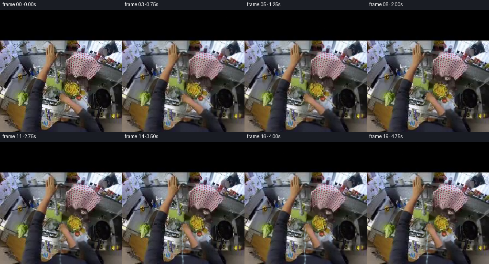
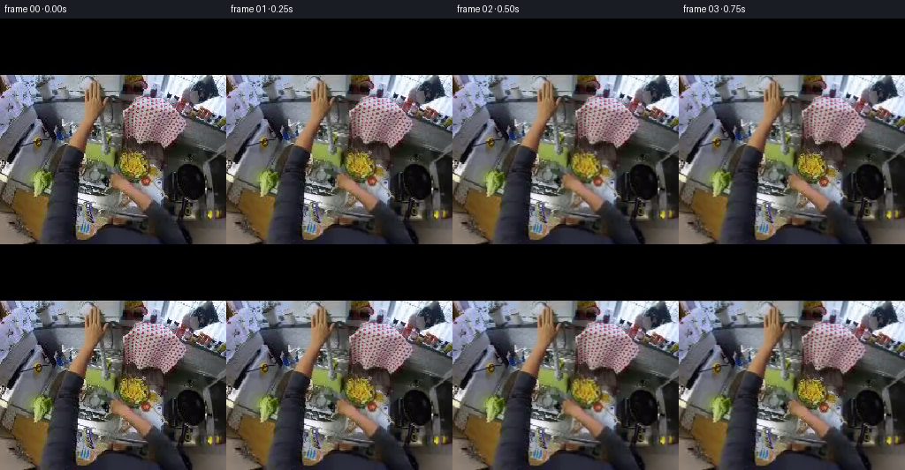

CODING AGENTS AS PIXEL WORLD MODELS
traex/GPT-5.6-Sol · common50_0025
点击播放 · 原生 RGB 像素
逐轮保存的候选
回放视频、检查图与代码变化。
每份候选均可单独播放。实际图片检查记录在下方工具轨迹中。
候选 01播放与检查图
点击播放 · 原生 RGB 像素


展开代码变化
--- 上一保存版本
+++ 本次保存版本
@@ -0,0 +1,122 @@
+from pathlib import Path
+import numpy as np
+import cv2
+from PIL import Image, ImageDraw, ImageFilter
+import artifact_io
+
+ROOT=Path(__file__).resolve().parent
+base=np.array(Image.open(ROOT/'first_frame.png').convert('RGB'))
+H,W=base.shape[:2]
+
+# Foreground hand is the large warm connected form near the tap.
+r,g,b=[base[:,:,i].astype(np.int16) for i in range(3)]
+seed=((r>82)&(r>g+7)&(g>b+3)&(np.indices((H,W))[1]>116)&(np.indices((H,W))[1]<185)&
+ (np.indices((H,W))[0]>136)&(np.indices((H,W))[0]<224)).astype(np.uint8)
+# Keep relevant connected components, close tiny texture holes, soften as a natural matte.
+n,lab,st,_=cv2.connectedComponentsWithStats(seed)
+keep=np.zeros_like(seed)
+for k in range(1,n):
+ x,y,w,h,a=st[k]
+ if a>35: keep[lab==k]=1
+keep=cv2.morphologyEx(keep,cv2.MORPH_CLOSE,np.ones((7,7),np.uint8),iterations=2)
+keep=cv2.dilate(keep,np.ones((5,5),np.uint8),iterations=1)
+hand_alpha=cv2.GaussianBlur(keep.astype(np.float32),(0,0),1.35)
+# Use the authentic hand pixels; padded edge colors avoid dark fringes when rotating.
+hand_rgb=base.copy().astype(np.float32)
+for _ in range(5):
+ blur=cv2.GaussianBlur(hand_rgb,(0,0),2)
+ hand_rgb=np.where((hand_alpha[:,:,None]>.02),hand_rgb,blur)
+
+# Approximate pivot at the silver tap handle under the gripping hand.
+pivot=np.array([149.0,177.0])
+
+def ease(x):
+ x=np.clip(x,0,1); return x*x*(3-2*x)
+
+def affine_about(angle_deg, dx=0, dy=0):
+ M=cv2.getRotationMatrix2D(tuple(pivot),angle_deg,1.0)
+ M[:,2]+=np.array([dx,dy]); return M
+
+def warp(arr,M,interp=cv2.INTER_LINEAR):
+ return cv2.warpAffine(arr,M,(W,H),flags=interp,borderMode=cv2.BORDER_CONSTANT,borderValue=0)
+
+def hand_layer(M):
+ a=warp(hand_alpha,M)
+ c=warp(hand_rgb,M)
+ return c,a
+
+def make_water(frame, strength, phase):
+ if strength<=0:return frame
+ # Water originates below the visible spout around (126,177), widens and shimmers.
+ yy,xx=np.mgrid[0:H,0:W]
+ y0=177
+ center=126.0+0.8*np.sin(phase+yy*.20)
+ width=1.25+0.012*np.maximum(0,yy-y0)
+ stream=np.exp(-((xx-center)/width)**2*1.7)*(yy>=y0)
+ stream*=np.clip((yy-y0)/5,0,1)*strength
+ # bright core, cyan edges, alternating transparent beads
+ ripple=.72+.28*np.sin(yy*.72+phase*2.1)
+ stream*=ripple
+ col=np.zeros_like(frame,dtype=np.float32)
+ col[:]=[190,225,239]
+ a=np.clip(stream*.62,0,.62)[...,None]
+ out=frame.astype(np.float32)*(1-a)+col*a
+ # tiny spreading splash at basin bottom
+ splash_y=238
+ ring=np.exp(-((yy-splash_y)/1.4)**2-((xx-126)/(7+4*strength))**2)*strength*.36
+ aa=ring[...,None]
+ out=out*(1-aa)+np.array([190,220,235])*aa
+ return np.clip(out,0,255).astype(np.uint8)
+
+frames=[]
+for i in range(20):
+ if i==0:
+ frames.append(base.copy()); continue
+ # Subtle egocentric settling gives life without corrupting the source view.
+ t=i/19
+ camx=.35*np.sin(i*.45); camy=.22*np.sin(i*.31)
+ C=np.float32([[1,0,camx],[0,1,camy]])
+ bg=cv2.warpAffine(base,C,(W,H),flags=cv2.INTER_LINEAR,borderMode=cv2.BORDER_REFLECT)
+
+ # Initial reach/squeeze (frames 1-4), then clockwise turn of tap (5-12), hold (13-19).
+ reach=ease(i/4)
+ turn=ease((i-3)/9)
+ angle=-23.0*turn
+ dx=-1.0*reach+1.6*turn
+ dy=1.1*reach+2.0*turn
+ M=affine_about(angle,dx,dy)
+ color,a=hand_layer(M)
+
+ # Remove the original hand only where it has departed. Inpaint conservatively from its
+ # immediate surroundings; this is mostly hidden by the transformed hand and preserves tap.
+ moved=warp(hand_alpha,M)
+ vac=np.clip(hand_alpha-moved*0.72,0,1)
+ vac=(vac>.22).astype(np.uint8)*255
+ vac=cv2.dilate(vac,np.ones((3,3),np.uint8),1)
+ filled=cv2.inpaint(bg,vac,3,cv2.INPAINT_TELEA)
+ bg=np.where((vac[:,:,None]>0),filled,bg)
+
+ # Soft contact shadow beneath the rotated wrist/fingers.
+ shadow=warp(hand_alpha,affine_about(angle,dx+2.0,dy+2.4))
+ sh=np.clip(shadow-a*.45,0,.5)[...,None]
+ comp=bg.astype(np.float32)*(1-.30*sh)
+ aa=np.clip(a,0,1)[...,None]
+ comp=comp*(1-aa)+color*aa
+ comp=np.clip(comp,0,255).astype(np.uint8)
+
+ # Water begins only after the handle has substantially turned on.
+ water=ease((i-9)/4)
+ comp=make_water(comp,water,i*.57)
+
+ # minute exposure response to reflective water, and restrained sensor grain
+ if water>0:
+ comp=np.clip(comp.astype(np.float32)*(1+0.012*water),0,255).astype(np.uint8)
+ rng=np.random.default_rng(811+i)
+ noise=rng.normal(0,.32,comp.shape[:2])[:,:,None]
+ comp=np.clip(comp.astype(np.float32)+noise,0,255).astype(np.uint8)
+ frames.append(comp)
+
+frames=np.stack(frames).astype(np.uint8)
+# Contract requires exact source frame.
+frames[0]=base
+artifact_io.save(frames,ROOT)
可观测工具轨迹
实际执行的命令与返回图片。
命令 1exit 0
/bin/bash -lc "cat prompt.txt && printf '\\n---RULES---\\n' && cat GENERATION_RULES.md"
命令 2exit 0
/bin/bash -lc "find . -maxdepth 2 -type f -printf '%p %s bytes\\n' | sort"
命令 3exit 0
/bin/bash -lc "cat task_spec.json && sed -n '1,240p' artifact_io.py"
命令 4exit 0
/bin/bash -lc "python - <<'PY'
from PIL import Image
import numpy as np
im=np.array(Image.open('first_frame.png').convert('RGB'))
print(im.shape, im.dtype, im.min(axis=(0,1)), im.max(axis=(0,1)), im.mean(axis=(0,1)), im.std(axis=(0,1)))
# brightness/canny-ish gradient block stats 16x16
Y=im.mean(2)
for yy in range(0,256,16):
print(' '.join(f'{Y[yy:yy+16,x:x+16].mean():3.0f}' for x in range(0,256,16)))
PY"命令 5exit 2
/bin/bash -lc "cat > /tmp/analyze.py <<'PY'
import cv2, numpy as np
from PIL import Image
im=cv2.cvtColor(cv2.imread('first_frame.png'),cv2.COLOR_BGR2RGB); h,w,_=im.shape
R,G,B=[im[:,:,i].astype(int) for i in range(3)]
for name,m in {
'skin1':(R>70)&(R>G*1.08)&(G>B*1.08),
'skin2':(R>80)&(R>G+8)&(G>B+4),
'brightneutral':(R>130)&(G>130)&(B>130)&(np.maximum.reduce([R,G,B])-np.minimum.reduce([R,G,B])<25),
'metal':(R>70)&(G>70)&(B>70)&(np.maximum.reduce([R,G,B])-np.minimum.reduce([R,G,B])<18),
'blue':(B>R*1.15)&(B>G*1.05)&(B>60),
'red':(R>G*1.25)&(R>B*1.25)&(R>70),
}.items():
m=(m.astype(np.uint8)*255); n,l,stats,c=cv2.connectedComponentsWithStats(m)
arr=[]
for i in range(1,n):
x,y,ww,hh,a=stats[i];
if a>=20: arr.append((a,(x,y,ww,hh),tuple(np.round(c[i],1))))
print('\\n',name,'total',np.count_nonzero(m),'components',sorted(arr,reverse=True)[:20])
# kmeans 16 and show labels on 8x8 majority grid, and cluster means
pix=im[64:].reshape(-1,3).astype(np.float32)
crit=(cv2.TERM_CRITERIA_EPS+cv2.TERM_CRITERIA_MAX_ITER,50,.2)
_,lab,cen=cv2.kmeans(pix,16,None,crit,10,cv2.KMEANS_PP_CENTERS)
lab=lab.reshape(192,256)
order=np.argsort(cen.mean(1)); mp={old:i for i,old in enumerate(order)}
print('\\nclusters low-high')
for i,old in enumerate(order): print(hex(i)[2:].upper(),np.round(cen[old]).astype(int),np.sum(lab==old))
for gy in range(0,192,8):
print(''.join(hex(mp[np.bincount(lab[gy:gy+8,gx:gx+8].reshape(-1),minlength=16).argmax()])[2:].upper() for gx in range(0,256,8)))
PY
python /tmp/analyze.py"命令 6exit 0
/bin/bash -lc "cat > .tmp/analyze.py <<'PY'
import cv2, numpy as np
im=cv2.cvtColor(cv2.imread('first_frame.png'),cv2.COLOR_BGR2RGB); h,w,_=im.shape
R,G,B=[im[:,:,i].astype(int) for i in range(3)]
for name,m in {
'skin1':(R>70)&(R>G*1.08)&(G>B*1.08),
'skin2':(R>80)&(R>G+8)&(G>B+4),
'brightneutral':(R>130)&(G>130)&(B>130)&(np.maximum.reduce([R,G,B])-np.minimum.reduce([R,G,B])<25),
'metal':(R>70)&(G>70)&(B>70)&(np.maximum.reduce([R,G,B])-np.minimum.reduce([R,G,B])<18),
'blue':(B>R*1.15)&(B>G*1.05)&(B>60),
'red':(R>G*1.25)&(R>B*1.25)&(R>70),
}.items():
m=(m.astype(np.uint8)*255); n,l,stats,c=cv2.connectedComponentsWithStats(m)
arr=[]
for i in range(1,n):
x,y,ww,hh,a=stats[i];
if a>=20: arr.append((a,(x,y,ww,hh),tuple(np.round(c[i],1))))
print('\\n',name,'total',np.count_nonzero(m),'components',sorted(arr,reverse=True)[:20])
pix=im[64:].reshape(-1,3).astype(np.float32)
crit=(cv2.TERM_CRITERIA_EPS+cv2.TERM_CRITERIA_MAX_ITER,50,.2)
_,lab,cen=cv2.kmeans(pix,16,None,crit,10,cv2.KMEANS_PP_CENTERS)
lab=lab.reshape(192,256)
order=np.argsort(cen.mean(1)); mp={old:i for i,old in enumerate(order)}
print('\\nclusters low-high')
for i,old in enumerate(order): print(hex(i)[2:].upper(),np.round(cen[old]).astype(int),np.sum(lab==old))
for gy in range(0,192,8):
print(''.join(hex(mp[np.bincount(lab[gy:gy+8,gx:gx+8].reshape(-1),minlength=16).argmax()])[2:].upper() for gx in range(0,256,8)))
PY
python .tmp/analyze.py"命令 7exit 0
/bin/bash -lc "python - <<'PY'
import cv2,numpy as np
im=cv2.cvtColor(cv2.imread('first_frame.png'),cv2.COLOR_BGR2RGB);R,G,B=[im[:,:,i].astype(int) for i in range(3)]
m=(R>80)&(R>G+8)&(G>B+4)
n,l,s,c=cv2.connectedComponentsWithStats(m.astype('uint8'))
for k in sorted(range(1,n), key=lambda k:s[k,4], reverse=True)[:6]:
ys,xs=np.where(l==k); print('\\ncomp',k,'stat',s[k],'mean',im[l==k].mean(0))
for y in range(ys.min(),ys.max()+1,4):
xx=np.where(l[y]==k)[0]
print(y, (xx.min(),xx.max(),len(xx)) if len(xx) else None)
PY"命令 8exit 0
/bin/bash -lc "python - <<'PY'
import cv2,numpy as np
im=cv2.cvtColor(cv2.imread('first_frame.png'),cv2.COLOR_BGR2RGB).astype(float)
def code(v):
r,g,b=v; lum=v.mean(); mx=max(v);mn=min(v)
if lum<25:return ' '
if r>g+14 and g>b+7:
return 'H' if lum>115 else 'h' # warm / skin wood
if b>r+15 and b>g+7:return 'B' if lum>100 else 'b'
if lum>210:return '@'
if lum>170:return '#'
if lum>135:return 'O'
if lum>105:return 'o'
if lum>75:return ':'
if lum>45:return '.'
return ','
for y0,y1,x0,x1,s in [(64,160,0,256,4),(130,240,80,210,2),(160,256,0,256,4)]:
print('\\nROI',x0,y0,x1,y1,'scale',s)
print('legend H warm bright, h warm dark, B blue bright, b blue dark, @#Oo:., neutral')
for y in range(y0,y1,s): print(''.join(code(im[y:y+s,x:x+s].mean((0,1))) for x in range(x0,x1,s)))
PY"命令 9exit 0
/bin/bash -lc "python - <<'PY'
import cv2,numpy as np
im=cv2.imread('first_frame.png')
for rect in [(118,140,68,84),(70,65,60,90),(0,185,62,71)]:
m=np.zeros(im.shape[:2],np.uint8); bg=np.zeros((1,65),np.float64);fg=np.zeros((1,65),np.float64)
cv2.grabCut(im,m,rect,bg,fg,8,cv2.GC_INIT_WITH_RECT)
mm=(m==1)|(m==3); n,l,s,c=cv2.connectedComponentsWithStats(mm.astype('uint8'))
print(rect,'total',mm.sum(),'comps',sorted([tuple(x) for x in s[1:]],key=lambda z:z[4],reverse=True)[:5])
PY"命令 10exit 0
/bin/bash -lc "cat > generate.py <<'PY'
from pathlib import Path
import numpy as np
import cv2
from PIL import Image, ImageDraw, ImageFilter
import artifact_io
ROOT=Path(__file__).resolve().parent
base=np.array(Image.open(ROOT/'first_frame.png').convert('RGB'))
H,W=base.shape[:2]
# Foreground hand is the large warm connected form near the tap.
r,g,b=[base[:,:,i].astype(np.int16) for i in range(3)]
seed=((r>82)&(r>g+7)&(g>b+3)&(np.indices((H,W))[1]>116)&(np.indices((H,W))[1]<185)&
(np.indices((H,W))[0]>136)&(np.indices((H,W))[0]<224)).astype(np.uint8)
# Keep relevant connected components, close tiny texture holes, soften as a natural matte.
n,lab,st,_=cv2.connectedComponentsWithStats(seed)
keep=np.zeros_like(seed)
for k in range(1,n):
x,y,w,h,a=st[k]
if a>35: keep[lab==k]=1
keep=cv2.morphologyEx(keep,cv2.MORPH_CLOSE,np.ones((7,7),np.uint8),iterations=2)
keep=cv2.dilate(keep,np.ones((5,5),np.uint8),iterations=1)
hand_alpha=cv2.GaussianBlur(keep.astype(np.float32),(0,0),1.35)
# Use the authentic hand pixels; padded edge colors avoid dark fringes when rotating.
hand_rgb=base.copy().astype(np.float32)
for _ in range(5):
blur=cv2.GaussianBlur(hand_rgb,(0,0),2)
hand_rgb=np.where((hand_alpha[:,:,None]>.02),hand_rgb,blur)
# Approximate pivot at the silver tap handle under the gripping hand.
pivot=np.array([149.0,177.0])
def ease(x):
x=np.clip(x,0,1); return x*x*(3-2*x)
def affine_about(angle_deg, dx=0, dy=0):
M=cv2.getRotationMatrix2D(tuple(pivot),angle_deg,1.0)
M[:,2]+=np.array([dx,dy]); return M
def warp(arr,M,interp=cv2.INTER_LINEAR):
return cv2.warpAffine(arr,M,(W,H),flags=interp,borderMode=cv2.BORDER_CONSTANT,borderValue=0)
def hand_layer(M):
a=warp(hand_alpha,M)
c=warp(hand_rgb,M)
return c,a
def make_water(frame, strength, phase):
if strength<=0:return frame
# Water originates below the visible spout around (126,177), widens and shimmers.
yy,xx=np.mgrid[0:H,0:W]
y0=177
center=126.0+0.8*np.sin(phase+yy*.20)
width=1.25+0.012*np.maximum(0,yy-y0)
stream=np.exp(-((xx-center)/width)**2*1.7)*(yy>=y0)
stream*=np.clip((yy-y0)/5,0,1)*strength
# bright core, cyan edges, alternating transparent beads
ripple=.72+.28*np.sin(yy*.72+phase*2.1)
stream*=ripple
col=np.zeros_like(frame,dtype=np.float32)
col[:]=[190,225,239]
a=np.clip(stream*.62,0,.62)[...,None]
out=frame.astype(np.float32)*(1-a)+col*a
# tiny spreading splash at basin bottom
splash_y=238
ring=np.exp(-((yy-splash_y)/1.4)**2-((xx-126)/(7+4*strength))**2)*strength*.36
aa=ring[...,None]
out=out*(1-aa)+np.array([190,220,235])*aa
return np.clip(out,0,255).astype(np.uint8)
frames=[]
for i in range(20):
if i==0:
frames.append(base.copy()); continue
# Subtle egocentric settling gives life without corrupting the source view.
t=i/19
camx=.35*np.sin(i*.45); camy=.22*np.sin(i*.31)
C=np.float32([[1,0,camx],[0,1,camy]])
bg=cv2.warpAffine(base,C,(W,H),flags=cv2.INTER_LINEAR,borderMode=cv2.BORDER_REFLECT)
# Initial reach/squeeze (frames 1-4), then clockwise turn of tap (5-12), hold (13-19).
reach=ease(i/4)
turn=ease((i-3)/9)
angle=-23.0*turn
dx=-1.0*reach+1.6*turn
dy=1.1*reach+2.0*turn
M=affine_about(angle,dx,dy)
color,a=hand_layer(M)
# Remove the original hand only where it has departed. Inpaint conservatively from its
# immediate surroundings; this is mostly hidden by the transformed hand and preserves tap.
moved=warp(hand_alpha,M)
vac=np.clip(hand_alpha-moved*0.72,0,1)
vac=(vac>.22).astype(np.uint8)*255
vac=cv2.dilate(vac,np.ones((3,3),np.uint8),1)
filled=cv2.inpaint(bg,vac,3,cv2.INPAINT_TELEA)
bg=np.where((vac[:,:,None]>0),filled,bg)
# Soft contact shadow beneath the rotated wrist/fingers.
shadow=warp(hand_alpha,affine_about(angle,dx+2.0,dy+2.4))
sh=np.clip(shadow-a*.45,0,.5)[...,None]
comp=bg.astype(np.float32)*(1-.30*sh)
aa=np.clip(a,0,1)[...,None]
comp=comp*(1-aa)+color*aa
comp=np.clip(comp,0,255).astype(np.uint8)
# Water begins only after the handle has substantially turned on.
water=ease((i-9)/4)
comp=make_water(comp,water,i*.57)
# minute exposure response to reflective water, and restrained sensor grain
if water>0:
comp=np.clip(comp.astype(np.float32)*(1+0.012*water),0,255).astype(np.uint8)
rng=np.random.default_rng(811+i)
noise=rng.normal(0,.32,comp.shape[:2])[:,:,None]
comp=np.clip(comp.astype(np.float32)+noise,0,255).astype(np.uint8)
frames.append(comp)
frames=np.stack(frames).astype(np.uint8)
# Contract requires exact source frame.
frames[0]=base
artifact_io.save(frames,ROOT)
PY
python generate.py
python - <<'PY'
import numpy as np
from PIL import Image
z=np.load('pixels.npz')['pixels']; a=np.array(Image.open('first_frame.png').convert('RGB'))
first=np.stack([(z[:,:,0]>>16)&255,(z[:,:,0]>>8)&255,z[:,:,0]&255],2).astype('uint8')
print('shape',z.shape,'frame0 exact',np.array_equal(a,first),'frames',len(list(__import__('pathlib').Path('frames').glob('*.png'))))
for i in range(1,20):
b=np.array(Image.open(f'frames/{i:02d}.png')); p=np.array(Image.open(f'frames/{i-1:02d}.png'))
print(i, round(np.abs(b.astype(int)-p.astype(int)).mean(),2),np.count_nonzero(np.any(b"'!=p,2)))
PY'命令 11exit 0
/bin/bash -lc "python - <<'PY'
exec(open('generate.py').read().split('frames=[]')[0])
print('mask count', (hand_alpha>.5).sum(), 'bbox')
y,x=np.where(hand_alpha>.5);print(x.min(),x.max(),y.min(),y.max())
for yy in range(y.min(),y.max()+1,4):
xx=np.where(hand_alpha[yy]>.5)[0];print(yy, (xx.min(),xx.max(),len(xx)) if len(xx) else '')
PY"命令 12exit 0
/bin/bash -lc 'ls -lh generate.py pixels.npz index.html inspection.png transition_check.png frames/{00,04,08,12,16,19}.png && python -m py_compile generate.py && sha256sum first_frame.png frames/00.png'保存候选 1 份；完成命令 12 次；可验证图片返回 0 张。原始 API 响应与完整日志保留在本地。